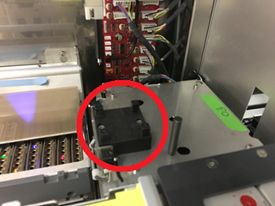
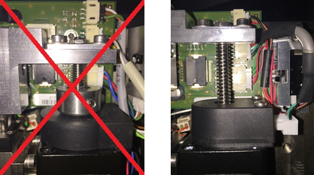
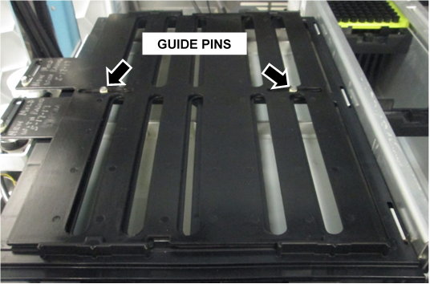
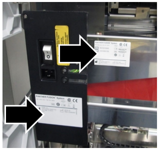
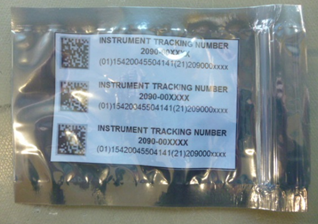
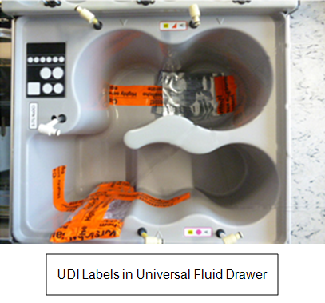
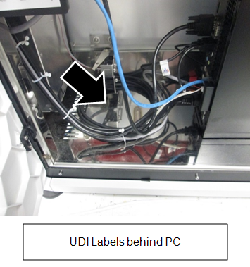
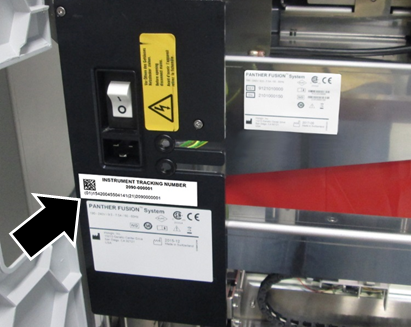
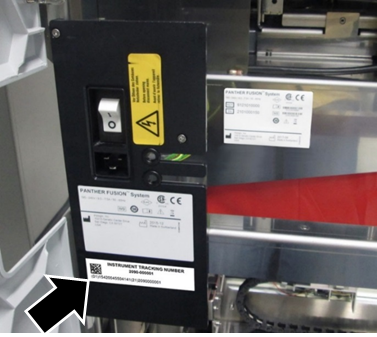

Labels for CE-IVD Compliance
Purpose
Labeling instructions for Fusion modules intended for CE-IVD compliance.
Preparation
Verify the following procedures were completed before labeling the Fusion.
- Panther Fusion System Installation.
- Cooling Fan Kit Installation. The Dual Fan Assembly was cut-in on Panther System Serial Number 00281. Some Panther Systems below #00281 may be upgraded to the dual fan.
- Verify Updated Linear Distributor Model Information upgrade the Linear Distributor is the old style referring to Distributor Module Removal and Replacement.
- Verify the Fusion Production Level Shutters [ASY-11260] are installed. If production shutters are not installed, refer to Tube Tray Drawer Shutter and Motor Upgrade Procedure.
 Verify the Four Post Fusion Centrifuge Lid is installed as shown below. (Contact Technical Support if the Four Post Lid is not present.)
Verify the Four Post Fusion Centrifuge Lid is installed as shown below. (Contact Technical Support if the Four Post Lid is not present.)

- Verify the New Rotary Distributor Spindle (without lead-screw nut) is installed. If the New Rotary Distributor Spindle is not installed, order a new module [ASY-09774].

- Verify that the Serial Number Faceplate attached to the Fusion module is the Panther Fusion faceplate that shipped with the Fusion module.

Optional monitor upgrade. (This upgrade is ordered by the customer.)
- PCAP Monitor Upgrade.

NOTE—If the Panther Serial Number is 02307 or above, the new PCAP monitor is factory-installed.
Procedure
Place the UDI tracking label on the Fusion faceplate.
- Verify a CE-IVD label is present on both the power switch faceplate and the chassis of the Fusion module.

- If the CE-IVD label is NOT present, stop and refer to Panther Fusion CE-IVD Labeling Checklist.
- Locate the applicable UDI Tracking label that matches the Panther System Serial Number.
- This label is shipped to all installation sites.

- For Panther Systems below Serial # 02242, order a new label referring to Ordering a UDI Label.
- For Panther Systems with Serial # 02242 and above, the UDI Tracking label is in either the Universal Fluid Drawer or in the PC Bay.


- If there is 1 inch of space below the power receptacle, place the UDI Tracking label under it.
NOTE—Verify all the numbers on the UDI Tracking label are visible when the door is closed. (It is acceptable if the System label is covered, as long as the UDI is visible. 
- If there is no clearance below the receptacle, place the UDI Tracking label under the System label.

NOTE—On some systems, it will not be possible to view the UDI Tracking label when the door closes.
 button at the top of the page to send feedback, comments, or change requests.
button at the top of the page to send feedback, comments, or change requests.